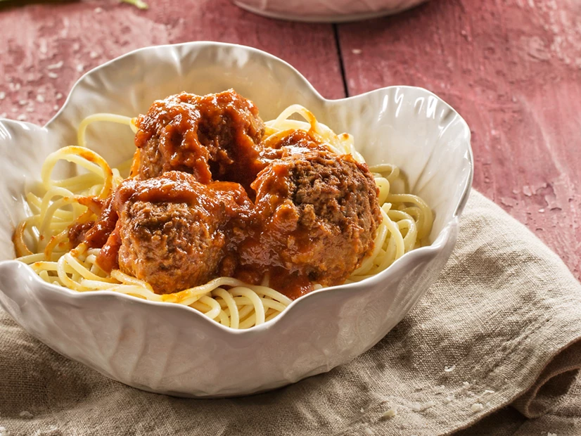

Almôndega 2

Ingredientes
- 500 g de carne moída
- 50 g + 120 g de farinhas de pão ralado
- 2 ovos
- 1 colher (sopa) de chia ou linhaça (opcional)
- Sal, pimenta e noz moscada QB
Modo de preparo
- Misturar bem a carne com 50 g do pão ralado, os ovos, a chia ou linhaça e os temperos.
- Moldar pequenas almôndegas e passar no restante do pão ralado.
- Assar a 180º C por 25 a 30 minutos.
Observações
Receita Yämmi (adaptada).